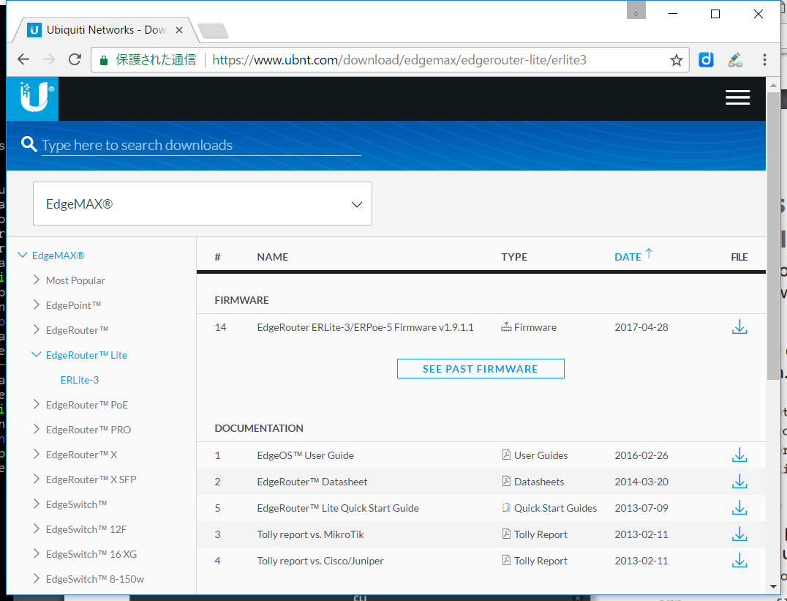

はじめに
EdgeRouter Lite (ERLite-3)をCLI (Command Line Interface)で設定しているうちにようやく基本が理解できたのでメモです。
EdgeOSとは
EdgeOS 日本語Wiki [非公式] の「EdgeOS とは」と「VyOS・Vyatta との違い」の説明がわかりやすかったです。
CLIの設定の基本操作
コマンド ＞ コマンド一覧 - EdgeOS 日本語Wiki [非公式] の「CLI の基本操作」がとっかかりとしては良かったです。
公式のEdgeOS User Guideのダウンロード
Ubiquiti NetworksのERLite-3用のファームウェアとドキュメントのダウンロードページ から "EdgeOS(TM) User Guide" がダウンロードできました。
このページへの行き方もメモしておきます。
- Ubiquiti Networks - Wireless networking products for broadband and enterprise の右上の "Support" をクリック。
- Ubiquiti Networks Support and Help Center で "EdgeMax" をクリック。
- EdgeMAX – Ubiquiti Networks Support and Help Center で "Latest Software" をクリック。
- Ubiquiti Networks - Downloads の左のツリーで "EdgeRouter Lite" の "ERLite-3" を選択。
EdgeOS User GuideのCLIでの設定の流れの説明
Appendix AのCommand Line Interfaceにコマンドラインでの設定の流れについて図入りで詳しく説明されています。
設定の流れ
- CLIではTABキーで補完が効きます。
- CLIには操作 (Operational) モードと設定 (Configuration) モードという2つのモードがあります。
- 操作モードでは
ubnt@ubnt:~$のように ユーザ名、ホスト名、カレントディレクトリの後に$が付いたプロンプトになっています。 configureコマンドで設定モードに入ります。- 設定モードでは
ubnt@ubnt#のようにユーザ名、ホスト名の後に#がついたプロンプトになっています。 - 設定の追加・上書きは
setコマンドを使い、ざっくり言うと「set 設定項目 値」のように指定します。 - 設定の削除は
deleteコマンドを使い、ざっくり言うと「delete 設定項目」のように指定します。 - さらには設定項目のコピーやリネームも出来ます。詳細はEdgeOS User Guideを参照してください。
- 設定内容はJSON形式で階層構造になっています。上で「ざっくり言うと」と書いた「設定項目」のところはJSONのキーを階層構造で指定することに相当します。
- 設定を変更したら
compareコマンドで変更点を一覧できます。 - さらに
showコマンドを実行して設定内容全体をJSON形式で表示します。diff -u風の感じで削除行の先頭には-、追加行の先頭には+が表示されます。またshowの後に設定項目名または項目名のパスの一部を指定することで、一部の設定を確認することも出来ます。後ほど例を示します。 - 変更内容に問題がなければ
commitコマンドで確定します。変更内容を破棄したい場合はdiscardコマンドを実行します。 commitコマンドを実行した時点ではメモリ上の設定のみが更新されています。動作確認して問題がなければsaveコマンドを実行して、設定内容をディスク上のファイル/config/config.bootに保存しておきます。するとEdgeRouterが再起動しても設定が維持されます。saveコマンドの後にファイル名を指定して別名で保存したり、EdgeRouterから別のマシンにscp、ftp、tftpで接続して設定ファイルを保存したり、コミット履歴を指定した数だけ保持しておくということも可能です。が、私はPCのほうからscpコマンドを実行して/config/config.bootをEdgeRouterからPCにコピーしてgitでバージョン管理することにしました。- 最後に
exitコマンドを実行して設定モードから抜けて操作モードに戻ります。変更を破棄して抜けたいときはdiscardとexitを順に実行する代わりにexit discardでも可能です。